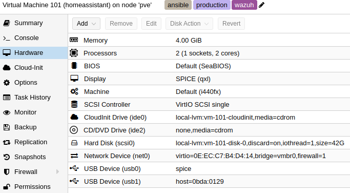
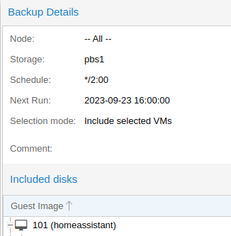
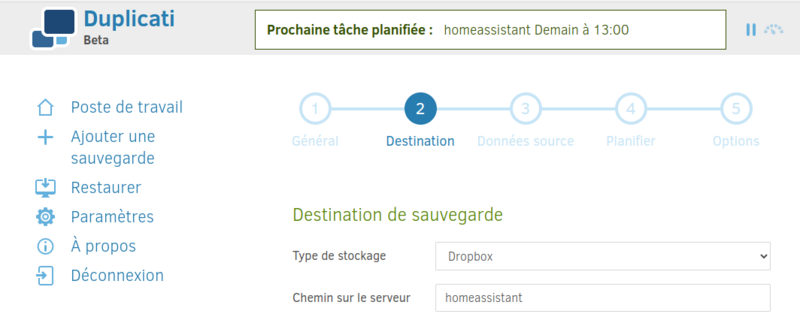
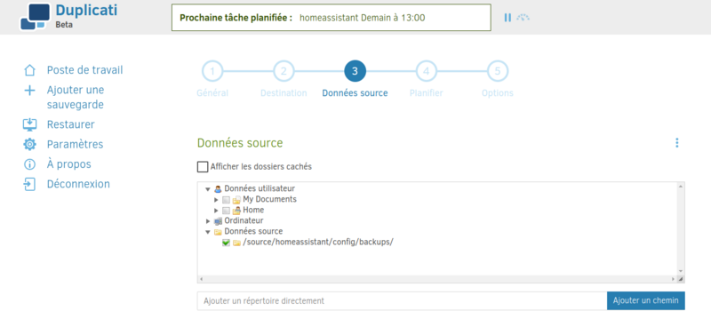
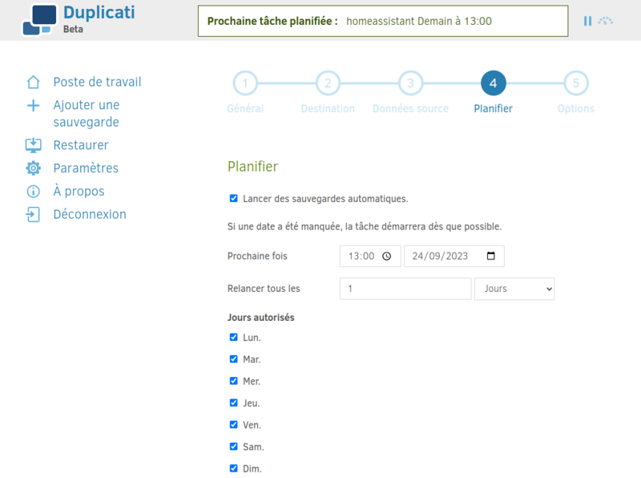
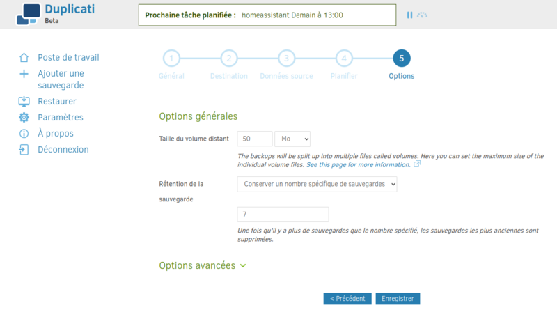

Création d'un Homelab
A la suite de la perte du serveur sur lequel s'exécutait mon installation Home assistant, j'ai choisi d'acquérir une machine plus puissante me permettant également de créer un Homelab.
Info
Un Homelab est un environnement informatique privé et personnalisé que vous pouvez utiliser pour tester, apprendre et expérimenter.
Cette nouvelle machine a pour objectif d'héberger Home assistant en reprenant la configuration existante à partir d'une sauvegarde, mais aussi me permettre d'installer d'autres produits afin de satisfaire ma curiosité et de parfaire mon expertise technique sans risque.
Choix du matériel
Il existe de nombreuses options disponibles en fonction de votre budget et de vos besoins.
Pour un homelab simple, vous pouvez utiliser un vieux PC ou un serveur. Si vous avez un budget plus important, vous pouvez acheter des composants neufs.
Mon choix s'est porté sur les éléments suivants :
-
Achat d'un micro-PC Beelink Mini S12 Pro, dont le prix était raisonnable, avec un processeur N100, 16Go de mémoire et 500Go de SSD. Il servira de serveur de virtualisation.
-
Réutilisation d'un vieux PC HP équipé d'un core i3, de 4Go de mémoire, de deux disques de 750 Go et 2 To, qui servira de serveur de backup.
Choix de l'OS
Mon choix s'est porté sur la solution de virtualisation Proxmox qui me permet de créer et détruire des machines virtuelles au grès de mes expérimentations.
Installation
Le processus est bien documenté sur le site Proxmox. Le système est ensuite accéssible à travers son navigateur : https://youripaddress:8006/
Restauration Home assistant
Création d'une machine virtuelle
La nouvelle machine a les caractéristiques suivantes et a comme système d'exploitation Ubuntu serveur en version LTS.

Installation des services requis
Ma configuration repose sur l'utilisation de docker et de portainer.
Pour faciliter la mise à jour de portainer, j'ai utilisé un fichier docker-compose.yml :
version: "3"
services:
portainer:
container_name: portainer
hostname: portainer
image: portainer/portainer-ce:latest
restart: unless-stopped
ports:
- 127.0.0.1:9443:9443
- 127.0.0.1:9000:9000
volumes:
- /var/run/docker.sock:/var/run/docker.sock # required for API access
- /etc/localtime:/etc/localtime:ro
- ./data:/data
La mise à jour consiste à exécuter les deux commandes suivantes :
Restauration de la stack Home assistant dans portainer
Portainer permet de faire une sauvegarde de sa configuration. Cela permet de télécharger en local un fichier qui peut ensuite servir à restaurer notre configuration. C'est cette fonctionnalité que j'utilise et qui me permet de récupérer mes données.
Une fois les containers recréés, l'application Home Assistant est de nouveau disponible, mais vierge. Comme pour portainer, Home Assistant permet de faire des sauvegardes.
automation:
- id: backup
alias: "sauvegarde HA"
trigger:
- platform: time
at: "23:00:00"
action:
alias: "Création d'un backup"
service: backup.create
Cela ajoute des sauvegardes au format tar dans le répertoire backups, tous les soir à 23h.
C'est un de ces fichiers préalablement sauvegardés sur une autre machine que j'ai récupéré et restauré dans le répertoire config (via la commande tar).
Home assistant est de nouveau fonctionnel.
Mise en place de sauvegardes
Cet incident montre l'importance d'avoir des sauvegardes. Pour cette nouvelle installation, elles seront de deux types :
- sauvegarde de machines virtuelles avec Proxmox et Proxmox Backup Server,
- sauvegarde vers dropbox des backups réalisés par Home Assistant.
Proxmox Backup Server
Proxmox Backup Server est un système d'exploitation et un outil de sauvegarde pour Proxmox. Je l'ai installé sur un vieux PC de bureau (cpu peu puissant et 4Go de mémoire vive) auquel j'ai ajouté un disque de 2To récupéré de mon ancien serveur. Je l'allume une fois par semaine et il s'éteint tout seul en fin de journée. Cela est suffisant pour avoir des sauvegardes régulières pour mon usage personnel.
J'ai créé une tache de sauvegarde, sur mon serveur proxmox, qui fait un backup d'une liste de VM toutes les 2 heures. Quand le serveur de sauvegarde est éteint, la tache est en erreur.

En cas de perte du serveur proxmox, chaque VM aura des sauvegardes sur le serveur Proxmox Backup Server.
Dropbox
En plus de la sauvegarde complète de la VM Home Assisant, je souhaitais avoir des sauvegardes de la base de donnée Home assistant sur une machine distante, ici Dropbox.
Ces sauvegardes sont réalisées avec un outil gratuit, Duplicaty, installé sous forme de container docker. Cet outil permet nativement la sauvegarde vers Dropbox.
Installation de duplicaty
---
version: "2.1"
services:
duplicati:
image: lscr.io/linuxserver/duplicati:latest
container_name: duplicati
environment:
- PUID=1000
- PGID=1000
- TZ=Europe/Paris
- CLI_ARGS= #optional
volumes:
- /home/vieuxcodeur/docker/duplicati/config:/config
- /home/vieuxcodeur/docker/duplicati/backups:/backups
- /home/vieuxcodeur/docker:/source
ports:
- 127.0.0.1:8200:8200
restart: unless-stopped
Le dernier volume, source, correspond au répertoire contenant les fichiers de l'application Home Assistant sur mon serveur, dont les fichiers de sauvegarde fait par l'application.
L'application web duplicaty est alors exposée sur le port 8200. Il ne reste qu'a créer un tache récurrente pour sauvegarder le répertoire backup de Home Assistant vers Dropbox.
Ajout d'une tache de sauvegarde planifiée





Les données essentielles sont maintenant sauvegardées.